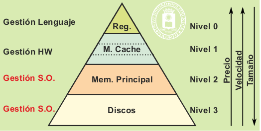
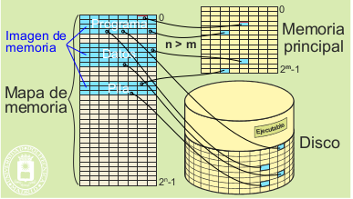

Como muestra en la figura , el almacenamiento básico permanente está formado por discos de gran capacidad de almacenamiento y baratos, pero lentos. La memoria principal es lenta comparada con la velocidad de los procesadores, por lo que se intercala la memoria cache, que, en los computadores actuales está organizada, a su vez, por tres niveles de cache.
La explotación correcta de la jerarquía de memoria exige tener, en cada momento, la información adecuada en el nivel
adecuado. Para ello, la información ha de moverse de nivel, esto es, ha de migrar de un nivel a otro. Esta migración
puede ser bajo demanda explícita o puede ser automática. La primera alternativa exige que el programa solicite
explícitamente el movimiento de la información, como ocurre, por ejemplo, con un programa editor, que va solicitando
la parte del fichero que está editando el usuario en cada momento. La segunda alternativa consiste en hacer la
migración transparente al programa, es decir, sin que éste tenga que ser consciente de que se produce. La migración
automática se utiliza en las memorias cache y en la memoria virtual, mientras que la migración bajo demanda se utiliza
en los otros niveles.
La migración automática toma como base la secuencia de direcciones que genera el procesador al ir ejecutando
un programa máquina. Sean k y k+1 dos niveles consecutivos de la jerarquía, siendo k el nivel más rápido. La existencia de
una migración automática de información permite que el programa referencie la información en el nivel k y que, en el caso de
que no exista una copia de esa información en dicho nivel k, se traiga ésta desde el nivel k+1 sin que el programa tenga que
hacer nada para ello. Se dice que hay acierto cuando el programa en ejecución referencia una información que se encuentra en
el nivel rápido y que hay fallo en el caso contrario.
El funcionamiento correcto de la migración automática exige un mecanismo que consiga tener en el nivel k
aquella información que necesita el programa en ejecución en cada instante, de forma que se produzcan muy pocos
fallos. Lo ideal sería que el mecanismo pudiera predecir la información que el programa necesitará para tenerla disponible
en el nivel rápido k. El mecanismo se basa en los siguientes aspectos:
Tamaño de las porciones transferidas.
Política de extracción.
Política de reemplazo.
Política de ubicación.
La política de extracción define qué información se sube del nivel k+1 al k y cuándo se sube. La solución
más corriente es la denominada por demanda, que consiste en subir aquella información que referencia el programa,
justo cuando sucede el fallo. El éxito de la jerarquía de memoria se basa en gran parte en la proximidad espacial
, para cuya explotación no se sube exclusivamente la información referenciada sino una porción mayor. En concreto,
para la memoria cache se transfieren líneas de unas pocas palabras, mientras que para la memoria virtual se transfieren
páginas de uno o varios KiB. El tamaño de estas porciones es una característica muy importante de la jerarquía de memoria.
El nivel k tiene menor capacidad de almacenamiento que el nivel k+1, por lo que normalmente está lleno. Por ello,
cuando se sube una porción de información hay que eliminar otra. La política de reemplazo determina qué
porción hay que eliminar, tratando de seleccionar una que ya no sea de interés para el programa en ejecución.
Por razones constructivas pueden existir limitaciones en cuanto al lugar en el que se pueden almacenar las diversas porciones
de información, la política de ubicación determina dónde se puede almacenar cada porción.
La eficiencia de la jerarquía de memoria se mide mediante los dos parámetros siguientes:
Tasa de aciertos o hit ratio (Hr).
Tiempo medio de acceso efectivo (Tef).
La tasa de aciertos Hr k del nivel k de la jerarquía se define como la probabilidad de encontrar en ese nivel la información referenciada. La tasa de fallos Fr k es igual a 1-Hr k . La tasa de aciertos Hr k ha de ser muy alta para que sea rentable el uso del nivel k de la jerarquía. Los factores más importantes que determinan Hr k son los siguientes:
Tamaño de la porción de información que se transfiere al nivel k.
Capacidad de almacenamiento del nivel k.
Política de reemplazo.
Política de ubicación.
Programa específico que se esté ejecutando (cada programa tiene su propio comportamiento).
Un efecto colateral de la jerarquía de memoria es que existen varias copias de determinadas porciones de información
en distintos niveles. Al escribir sobre la copia del nivel k, se produce una discrepancia con la copia del nivel inferior
k+1; esta situación se denomina falta de coherencia. Se dice que una porción de información está sucia si ha sido escrita
en el nivel k pero no ha sido actualizada en el k+1.
La consistencia de la jerarquía de memoria exige medidas para eliminar la falta de coherencia. En concreto,
una porción sucia en el nivel k ha de ser escrita en algún momento al nivel inferior k+1 para eliminar la falta de coherencia.
Con esta operación de escritura se limpia la porción del nivel k.
También se puede dar el caso contrario, es decir, que se modifique directamente la copia del nivel k+1. Para
que no se produzcan accesos erróneos, se deberá anular o borrar la copia del nivel superior k.
La coherencia adquiere mayor relevancia y dificultad cuando el sistema tiene varias memorias de un mismo
nivel. Esto ocurre, por ejemplo, en los multiprocesadores que cuentan con una memoria cache privada por cada procesador.
Si lo que escribe un procesador se quedase en su cache y no fuese accesible por los otros procesadores se podrían producir
errores de coherencia, por ejemplo, que un programa ejecutando en el procesador N2 no accediese a la copia correcta de
la información que le genera otro programa ejecutando en el procesador N1. Para evitar este problema, los buses de conexión
de las caches con la memoria principal deben implementar unos algoritmos llamados snoop (fisgones) que llevan constancia
de los contenidos de las caches y copian la información para que no surjan incoherencias.
Existen diversas políticas de actualización de la información creada o modificada, que se caracterizan por el
instante en el que se copia la información al nivel permanente.
La jerarquía de memoria presenta un problema de direccionamiento. Supóngase que el programa en ejecución genera
la dirección X del dato A, al que quiere acceder. Esta dirección X está referida al nivel k+1, pero se desea acceder
al dato A en el nivel k, que es más rápido. Para ello, se necesitará conocer la dirección Y que ocupa A en el nivel k,
por lo que será necesario establecer un mecanismo de traducción de direcciones X en sus correspondientes Y.
El problema de traducción no es trivial. Supóngase que el espacio de nivel k+1 es de 32 GiB, lo que exige direcciones
de 35 bits (n = 35), y que el espacio de nivel k es de 4 GiB, lo que requiere direcciones de 32 bits (m =32).
El traductor tiene aproximadamente 34 mil millones de valores de entrada distintos y 4 mil millones de direcciones finales.
Para simplificar la traducción y, además, aprovechar la proximidad espacial, se dividen los mapas de direcciones
de los espacios k+1 y k en porciones de tamaño 2 p . Estas porciones constituyen la unidad de información mínima
que se transfiere de un nivel al otro. El que la porción tenga tamaño 2 p permite dividir la dirección en dos partes: los m – p
bits más significativos sirven para identificar la porción, mientras que los p bits menos significativos sirven para
especificar el byte o la palabra dentro de la porción.Dado que al migrar una porción del nivel k+1 al k se mantienen
las posiciones relativas dentro de la misma, el problema de traducción se reduce a saber dónde se coloca la porción
en el espacio k.
Suponiendo, para el ejemplo anterior, que las porciones son de 4 K byte (p = 12), el problema de direccionamiento
queda dividido por 4096. Pero sigue siendo inviable plantear la traducción mediante una tabla directa completa,
pues sería una tabla de unos 8 millones de entradas y con 1 millón salidas válidas.
La proximidad referencial es la característica que hace viable la jerarquía de memoria, de ahí su importancia. En
términos globales la proximidad referencial establece que un programa en ejecución utiliza en cada momento una pequeña
parte de toda su información, es decir, de todo su código y de todos sus datos.
Para exponer el concepto de proximidad referencial de forma más específica partimos del concepto de traza.
La traza de un programa en ejecución es la lista ordenada en el tiempo de las direcciones de memoria que referencia
para llevar a cabo su ejecución. Esta traza R estará compuesta por las direcciones de las instrucciones que se van
ejecutando y por las direcciones de los datos empleados. R se representa así:
Re = re(1), re(2), re(3), ... re(j)
donde re(i) es la i-ésima dirección generada por la ejecución del programa e.
Adicionalmente, se define el concepto de distancia d(u, v) entre dos direcciones u y v como la diferencia en
valor absoluto |u – v|. La distancia entre dos elementos j y k de una traza R(e) es, por tanto, d(re(j), re(k)) =
|re(j) – re(k)|.
También se puede hablar de traza de E/S, refiriéndonos, en este caso, a la secuencia de las direcciones de periférico
empleadas en operaciones de E/S.
La proximidad referencial presenta dos facetas: la proximidad espacial y la proximidad temporal.
La proximidad espacial de una traza postula que hay una alta probabilidad de referenciar direcciones cercanas
a las utilizadas últimamente. Dicho de otra forma: dadas dos referencias re(j) y re(i) próximas en el espacio (es
decir, que la distancia de sus direcciones i – j sea pequeña), existe una alta probabilidad de que su distancia en la
traza d(re(j), re(i)) sea muy pequeña. Además, como muchos trozos de programa y muchas estructuras de datos se recorren
secuencialmente, existe una gran probabilidad de que la referencia siguiente a re(j) coincida con la dirección de memoria
siguiente. Este tipo especial de proximidad espacial recibe el nombre de proximidad secuencial
La proximidad espacial se explica si se tienen en cuenta los siguientes argumentos:
Los programas son fundamentalmente secuenciales, a excepción de las bifurcaciones, por lo que su lectura genera
referencias consecutivas.
La gran mayoría de los bucles son muy pequeños, de unas pocas instrucciones máquina, por lo que su ejecución
genera referencias con distancias de direcciones pequeñas.
Las estructuras de datos que se recorren de forma secuencial o con referencias muy próximas son muy frecuentes
Ejemplos son los vectores, las listas, las pilas, las matrices, etc. Además, las zonas de datos suelen estar agrupadas,
de manera que las referencias que se generan suelen estar próximas.
La proximidad temporal postula que un programa en ejecución tiende a volver a referenciar direcciones empleadas en un pasado cercano. Esto es, existe una probabilidad muy alta de que la próxima referencia re(j + 1) esté entre las n referencias anteriores re(j – n + 1), re(j – n + 2), .... , re(j – 2), re(j – 1), re(j). La proximidad temporal se explica si se tienen en cuenta los siguientes argumentos:
Los bucles producen proximidad temporal, además de proximidad espacial.
El uso de datos o parámetros de forma repetitiva produce proximidad temporal.
Las llamadas repetidas a subrutinas también son muy frecuentes y producen proximidad temporal. Esto es muy típico
con las funciones o subrutinas aritméticas, de conversión de códigos, etc.
Se denomina conjunto de trabajo a la suma de las zonas que utiliza un programa en un pequeño intervalo de tiempo.
El objetivo principal de la gestión de la jerarquía de memoria será conseguir que residan en las memorias más rápidas
aquellas zonas de los programas que están siendo referenciadas en cada instante, es decir, su conjunto de trabajo.
El término cache deriva del verbo francés cacher, que significa ocultar, esconder. Con este término se quiere reflejar
que la memoria cache no es visible al programa máquina, puesto que no está ubicada en el mapa de memoria. Se trata de
una memoria de apoyo a la memoria principal que sirve para acelerar los accesos. La memoria cache alberga información
recientemente utilizada, con la esperanza de que vuelva a ser empleada en un futuro próximo. Los aciertos sobre cache
permiten atender al procesador más rápidamente que accediendo a la memoria principal.
El bloque de información que migra entre la memoria principal y la cache se denomina línea y está formado por varias
palabras (valores típicos de línea son de 32 a 128 bytes). Toda la gestión de la cache necesaria para migrar
líneas se realiza por hardware, debido a la gran velocidad a la que debe funcionar. El tiempo de tratamiento de un
fallo tiene que ser del orden del tiempo de acceso a la memoria lenta, es decir, de los 60 a 200 ns que se tarda en acceder
a la memoria principal, puesto que el procesador se queda esperando a poder realizar el acceso solicitado.
En la actualidad, debido a la gran diferencia de velocidad entre los procesadores y las memorias principales, se
utilizan varios niveles de cache, incluyéndose los más rápidos en el mismo chip que el procesador. A título de ejemplo,
indicaremos que el procesador «Itanium 2 processor 6M» anunciado por Intel en el año 2004 tiene tres niveles
de memoria cache. El nivel más rápido lo forman dos caches L1 de 16 KiB cada una, una dedicada a las instrucciones y
otra a los datos. El segundo nivel es una única L2 de 256 KiB, mientras que el tercer nivel L3 tiene 6 MiB. Las
memorias L1 se acceden en un ciclo (el procesador trabaja a 1,5 GHz), mientras que la L2 lo hace en 5 ciclos y la
L3 en 14 ciclos.
Aunque la memoria cache es una memoria oculta, no nos podemos olvidar de su existencia, puesto que repercute
fuertemente en las prestaciones de los sistemas. Plantear adecuadamente un problema para que genere pocos fallos
de cache puede disminuir espectacularmente su tiempo de ejecución.
Una máquina de memoria real es una máquina convencional que solamente utiliza memoria principal para soportar el mapa de memoria. Por el contrario, una máquina con memoria virtual soporta su mapa de memoria mediante dos niveles de la jerarquía de memoria: la memoria principal y una memoria de respaldo (que suele ser el disco, aunque puede ser una memoria expandida, es decir una memoria RAM auxiliar). Sobre la memoria de respaldo se proyecta el mapa de memoria, que se denomina virtual para diferenciarlo de la memoria real. Las direcciones generadas por el procesador se refieren a este mapa virtual pero, sin embargo, los accesos reales se realizan sobre la memoria principal, más rápida que la de respaldo.
La memoria virtual es un mecanismo de migración automática, por lo que exige una gestión automática de la parte de la
jerarquía de memoria formada por la memoria principal y una parte del disco denominada zona de intercambio. Esta gestión
la realiza el sistema operativo con ayuda de una unidad hardware de gestión de memoria, llamada MMU (Memory Management Unit).
Como muestra, esta gestión incluye toda la memoria principal y la parte del disco que sirve de respaldo a la memoria virtual.
Como muestra en la siguiente figura, ambos espacios virtual y físico se dividen en páginas. Se denominan páginas virtuales a las páginas del espacio virtual, páginas de intercambio o de swap a las páginas residentes en la zona de intercambio y marcos de página a los espacios en los que se considera dividida la memoria principal. Normalmente, cada marco de página puede albergar una página virtual cualquiera, sin ninguna restricción de direccionamiento.
Los aspectos principales en los que se basa la memoria virtual son los siguientes:
Las direcciones generadas por las instrucciones máquina, tanto para referenciar datos como otras instrucciones, están referidas al mapa de memoria que constituye el espacio virtual. En este sentido, se suele decir que el procesador genera direcciones virtuales.
El mapa virtual asociado a cada programa en ejecución está soportado físicamente por una zona del disco, denominada de intercambio o swap, y por la memoria principal. Téngase en cuenta que toda la información del programa ha de residir obligatoriamente en algún soporte físico, ya sea disco o memoria princi pal, aunque también puede estar duplicada en ambos.
Los trozos de mapa virtual no utilizados por los programas no tienen soporte físico, es decir, no ocupan recursos reales.
Aunque el programa genera direcciones virtuales, para que éste pueda ejecutar, han de residir en memoria principal las instrucciones y los datos utilizados en cada momento. Si, por ejemplo, un dato referenciado por una instrucción máquina no reside en la memoria principal es necesario realizar un transvase de información (migración de información) entre el disco y la memoria principal, antes de que el programa pueda seguir ejecutando. Dado que el disco es del orden del millón de veces más lento que la memoria principal, el procesador no se queda esperando a que se resuelva el fallo, al contrario de lo que ocurre con la cache.
En cada instante, solamente reside en memoria principal una fracción de las páginas del programa, fracción que se denomina conjunto residente. Por tanto, la traducción no siempre es posible. Cuando la palabra solicitada no esté en memoria principal la MMU producirá una excepción hardware síncrona, denominada excepción de fallo de página. El sistema operativo resuelve el problema cargando la página necesaria en un marco de página, modificando, por tanto, el conjunto residente.
No hay que confundir el conjunto residente, que acabamos de definir, con el conjunto de trabajo, que especifica las páginas que deben estar en memoria para que el proceso no sufra fallos de página. El conjunto residente ha de irse adaptando a las necesidades del proceso para contener al conjunto de trabajo. Sin embargo, como el conjunto de trabajo solamente es conocido a posteriori, es decir, una vez ejecutado el programa, alcanzar este objetivo de forma óptima es imposible.
Los fallos de página son atendidos por el sistema operativo, que se encarga de realizar la adecuada migración de páginas para traer la página requerida por el programa a un marco de página, actualizando el con- junto residente. Se denomina paginación al proceso de migración necesario para atender los fallos de página.
El sistema operativo determina las páginas virtuales, que puede utilizar cada programa en su ejecución, y asigna el
soporte físico de cada página, ya sea un marco o una página de intercambio. Esta información queda reflejada en la
tabla de páginas, que es construida y mantenida por el sistema operativo.
Sin embargo, el sistema operativo no es más que un programa, por lo que, en un computador monoprocesador,
cuando está ejecutando un programa de usuario no está ejecutando el sistema operativo y, viceversa, cuando está
ejecutando éste no lo está el programa de usuario. Esto hace que sea imposible que las funciones que hay que hacer
en cada acceso a memoria de un programa, es decir, una o varias veces por cada instrucción máquina, las realice
otro programa. Estas funciones son:
Traducción de las direcciones.
Marcado de páginas como sucias y accedidas.
Vigilancia de los accesos para detectar posibles accesos incorrectos.
Estas funciones deben hacerse por un hardware especial que denominamos MMU (Memory Management
Unit). Trataremos en esta sección las funciones de traducción de direcciones y de marcado de páginas sucias, y
dejaremos la vigilancia para la sección “1.7.2 Mecanismos de protección de memoria”.
La traducción de cada dirección de memoria la realiza la MMU usando la información de la tabla de páginas
del programa en ejecución. Dado que el sistema operativo mantiene una tabla de páginas por cada programa activo,
existe un registro para indicar a la MMU la dirección de memoria donde se encuentra la tabla que debe utilizar. Dccho
registro, que denominaremos RIED (Registro Identificador del Espacio de Direccionamiento), apunta a la posición
de inicio de la correspondiente tabla de primer nivel.
La MMU realiza los pasos descritos en la figura 4.12 para hacer la traducción. Recalcamos que esta traducción
hay que hacerla por hardware dada la alta velocidad a la que debe hacerse (una fracción del tiempo de acceso de la
memoria principal, o de la memoria cache si existe), pues de lo contrario se penalizarían gravemente las prestaciones
del computador.
Como la tabla de páginas se almacena en memoria principal, en un sistema con tabla de páginas de dos niveles,
la MMU debe hacer dos accesos a memoria principal por cada traducción de dirección. Esto contradice lo dicho
anteriormente sobre la velocidad a la que debe hacerse la traducción y parece un contrasentido: para acceder a memoria
hay que traducir la dirección virtual, lo que supone realizar un acceso a memoria por cada nivel que tenga la
tabla de páginas. Esto representa un retardo inadmisible en los accesos a memoria. Para solventar este problema, se
dota a la MMU de una unidad denomina TLB (Translation Look-aside buffer), que analizamos seguidamente.
El que la MMU acceda a la tabla de páginas implica que debe conocer su estructura así como el formato con
creto que las entradas de las tablas de 1 er y 2o nivel. Esto significa que la estructura de la tabla de páginas está grabada
en el hardware. El sistema operativo debe adaptarse a dicha estructura que es inmutable para cada tipo de MMU.